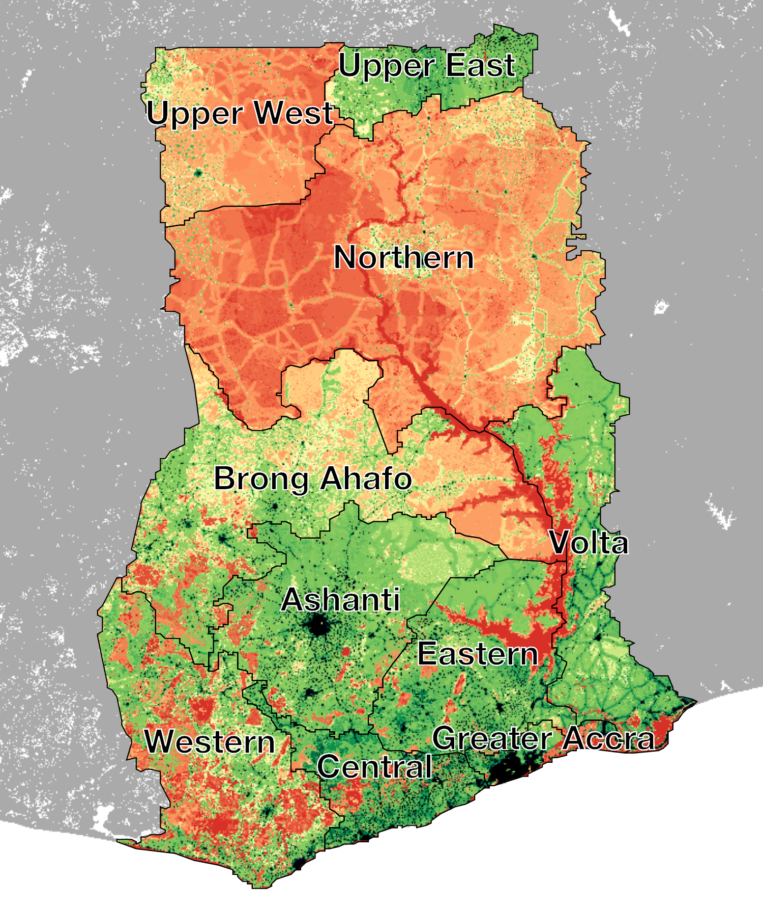
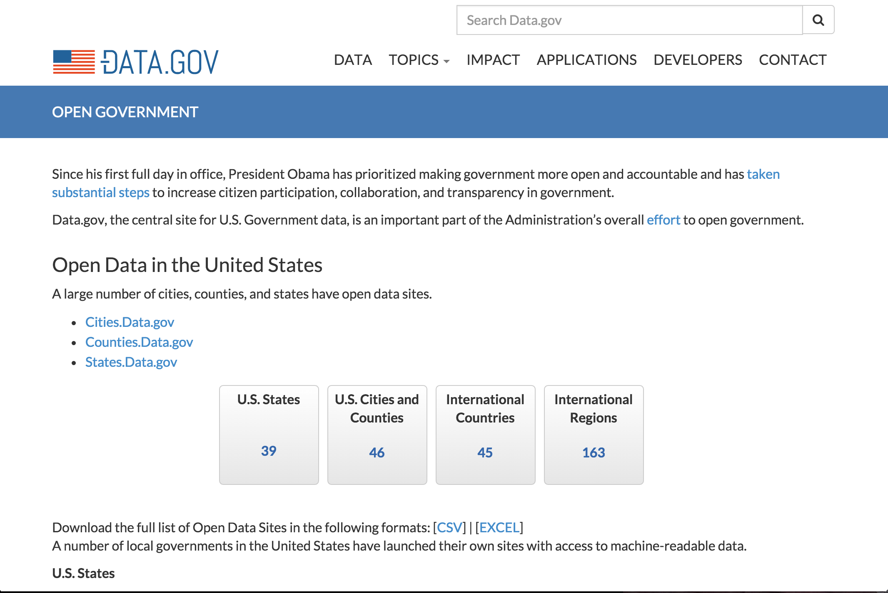

Visualizing risks from climate change
Philip Bogden, Ph.D.
Two-part presentation . . .
1. Science behind Novametrics LLC
2. Demo of some remarkable software
BTW, you already have the software
Our customers . . .
• Department of Defense (SBIR)
• Social Impact Investors
• Aid/Development Organizations
Concerned about risk in Sub Saharan Africa
Risks comprise some combination of . . .
1. Hazard
2. Exposure
For example. . .
Exposure (FEMA)

Risk ~ Hazard x Exposure (FEMA)

Socio-economic risks from climate change . . .
1. Hazard
2. Exposure
3. Vulnerability ~ 1 / Resiliency
Another example...
Social Impact Investing
Sub Saharan Africa
Climate change and cocoa
Incorporating socio-political factors...
Impact Investing (work in progress)
Data credits: United Nations, FAO, IIASA (http://gaez.fao.org), ACLED (www.acleddata.org), . . .
Integrated risk in Ghana

Includes socio-political considerations ~ Vulerability
“No substantial famine has ever occurred in any independent and democratic country with a
relatively free press.”
Amartya Sen, Democracy as a Universal Value
Nobel Prize in Economics, 1998
Emerging threats
Risk ~ Hazard x Exposure x Vulnerability
Switching gears
Credit: Mike Bostock (http://bost.ocks.org/mike/)
More earthquakes
http://pbogden.com/
Q: How does that work?
A: An incredible combination of...
• Open standards (HTML5, JavaScript, etc.)
• Open data (www.data.gov, etc.)
• Open source software (D3.js, etc.)
Open standards
http://w3.org . . and many, many others.
HTML5
“. . . the biggest mistake that we made, as a company, is betting too much on HTML5 . . . ”
Mark Zuckerberg, Founder & CEO, Facebook
Disrupt SF 2012
“When I'm introspective about the last few years I think the biggest mistake that we made, as a company, is betting too much on HTML5 as opposed to native . . . because it just wasn't there. And it's not that HTML5 is bad. I'm actually, on the long term, really excited about it.”
Mark Zuckerberg, Founder & CEO, Facebook
Disrupt SF 2012
Open data

http://www.data.gov/open-gov/
Open source software
http://osgeo.org . . . and many, many others.
Open source
http://bost.ocks.org/mike . . . Creator of D3 (and many others)